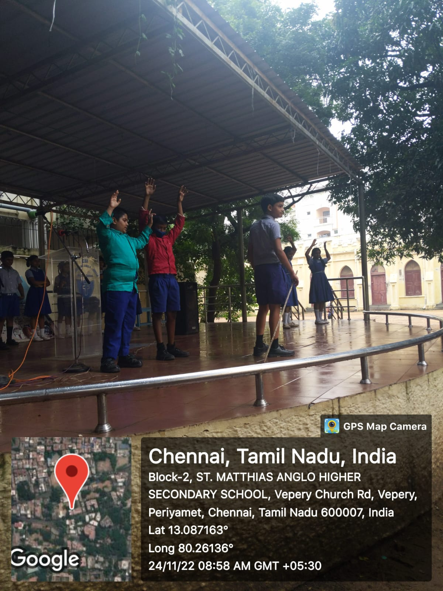
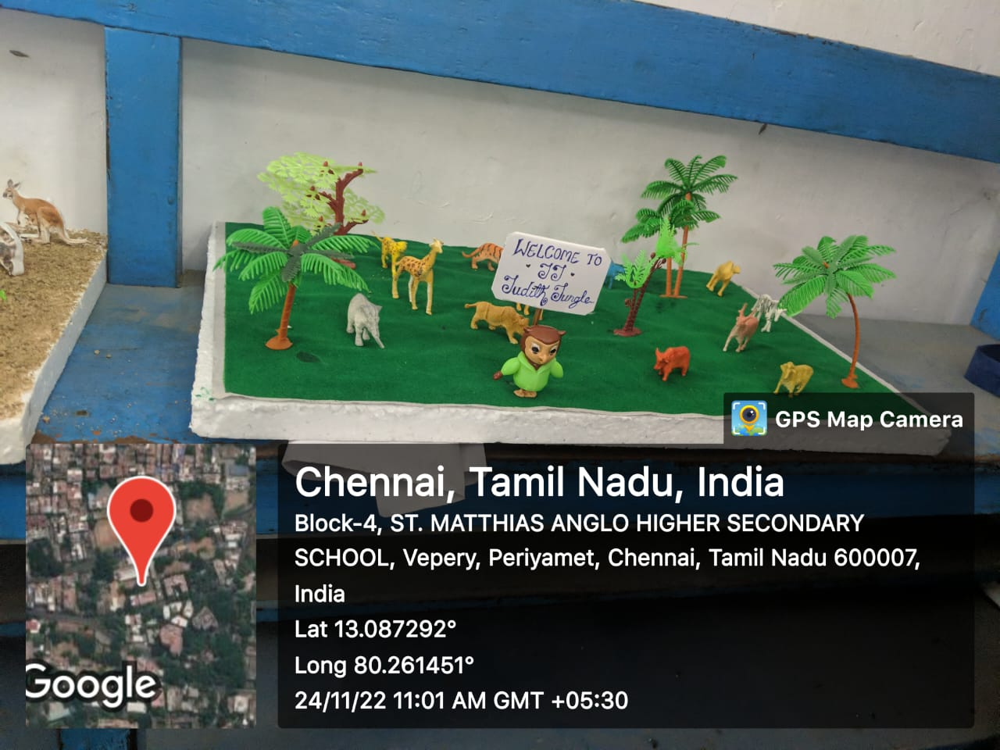
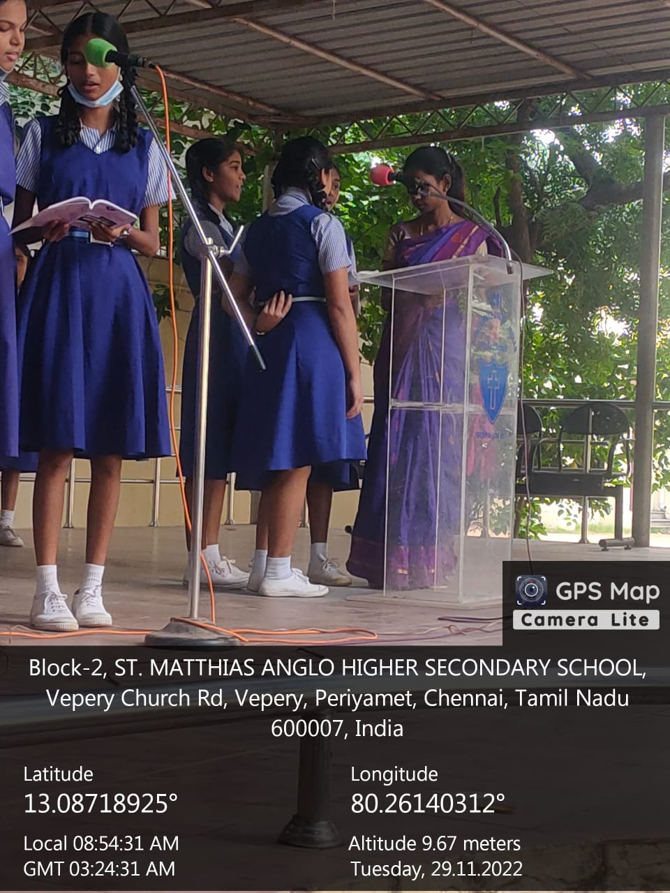
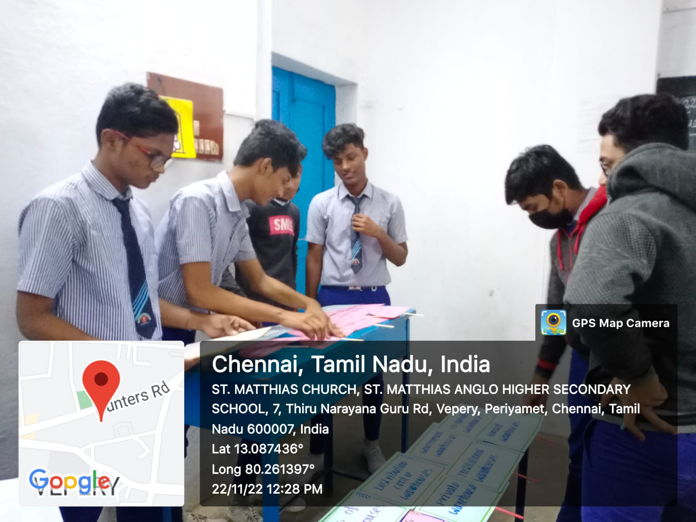
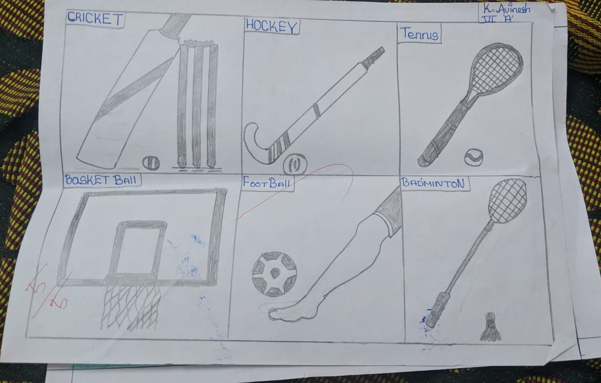
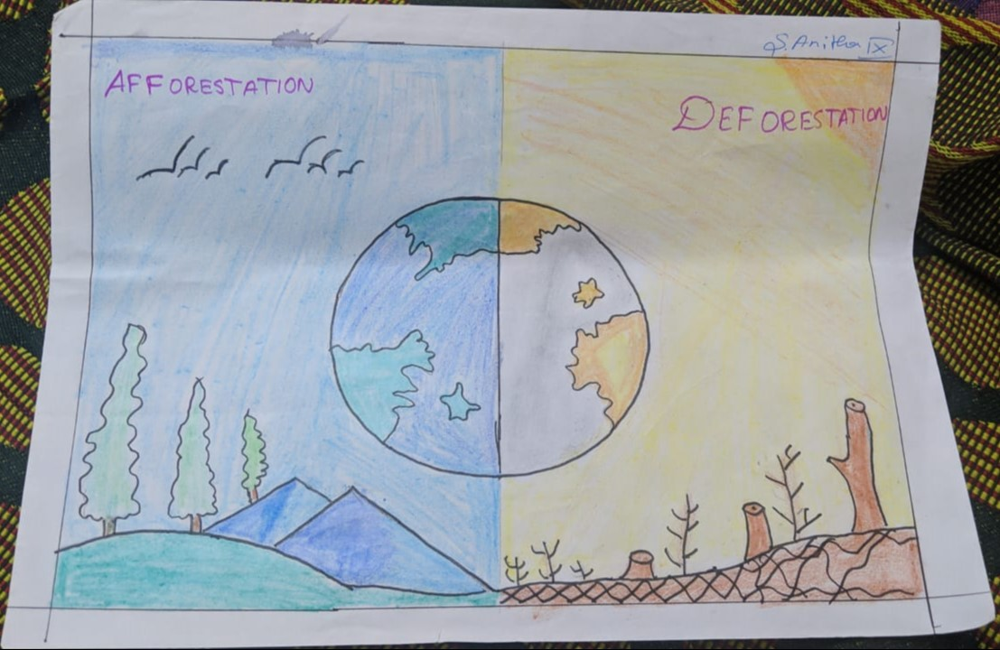
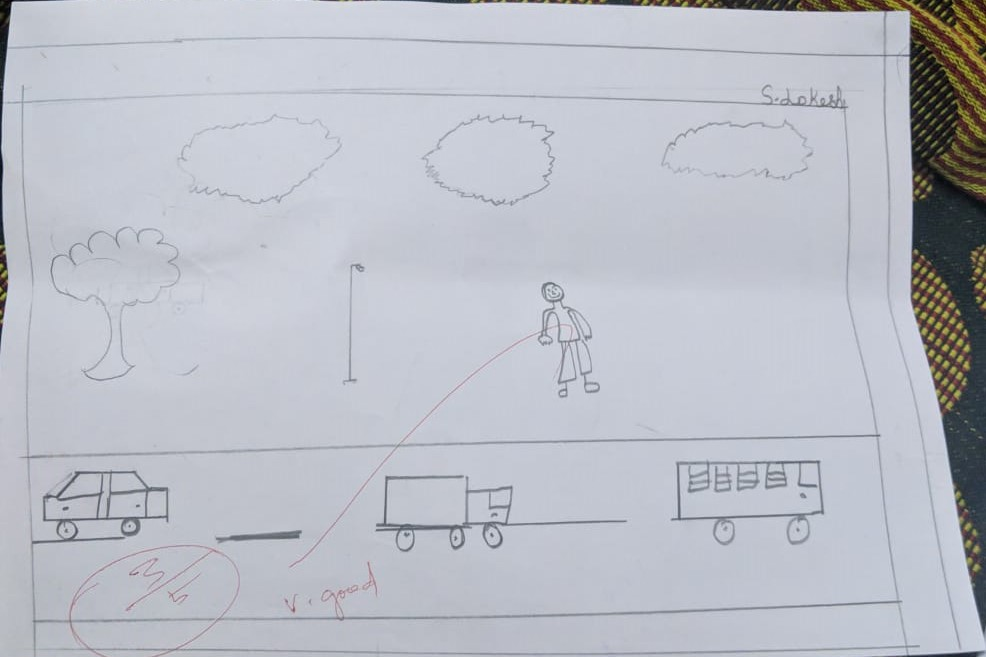
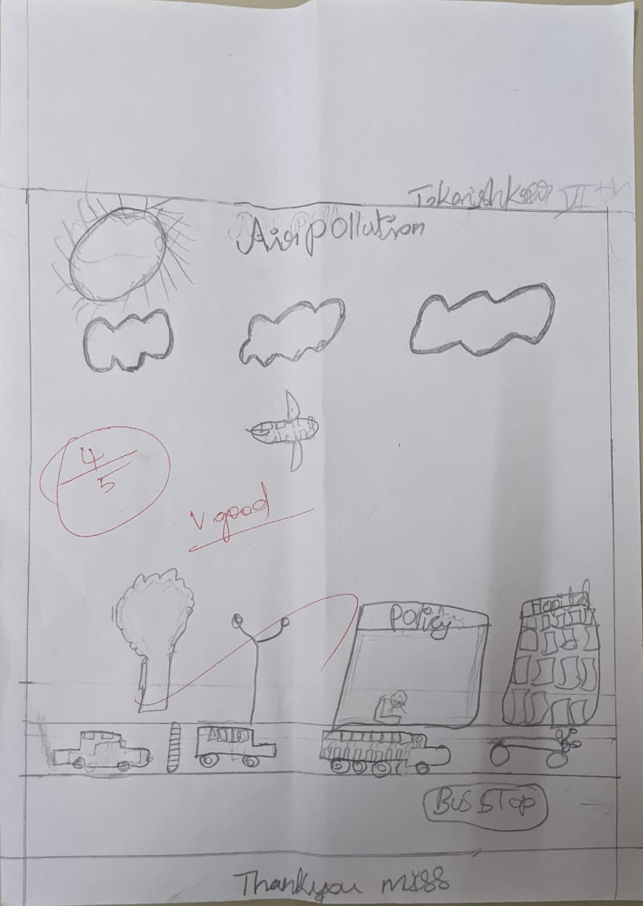
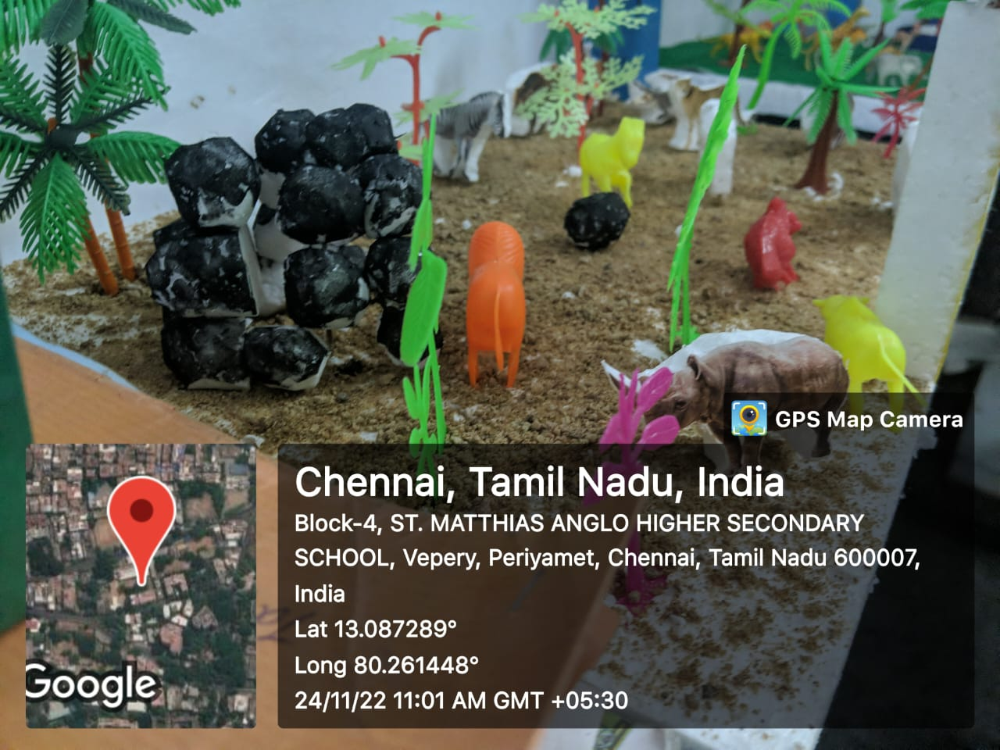
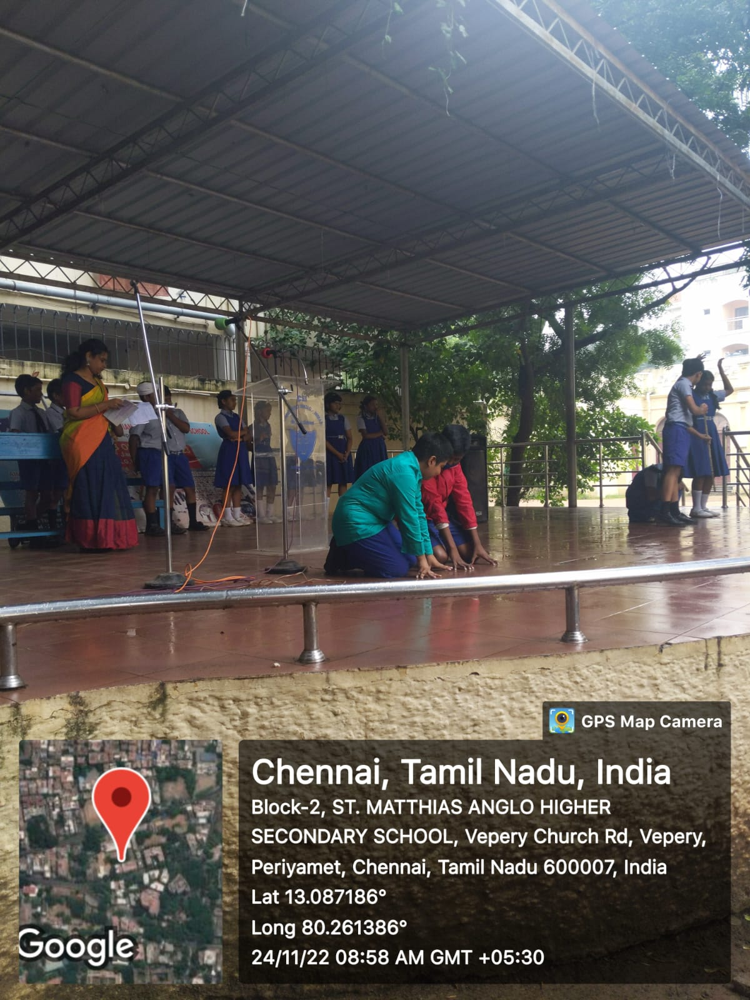

It is not easy teaching English to kids. This is very true for those students whose mother tongues are different from English. Teachers learn the use of mime techniques to teach English because it is effective and interesting.
Children will learn faster if they feel relaxed and happy. They must not feel the pressure of learning to understand something quickly. Playing games to teach lessons is very common among the lower grades, and mime effectively teaches English words and grammar.
The importance of learning English has been on the rise with jobs becoming more globalized. Even studying abroad has become very common among Indians, which requires good English knowledge. All higher education worldwide is taught in English, and learning the language at a very young age is better.
Children learn more quickly than adults, and using the mime game has seen excellent results. Kids learn the art of expressing without words in our training program and use it with others to learn new words and improve English fluency.
One of the biggest advantages of using expressions without words is that the learning process becomes a game that children will willingly participate in. When you make it a competitive activity, it becomes more interesting and exciting for the children.
They will make extra efforts to translate your expressions into words. Grammar is always a boring subject, and teachers find it very difficult to teach this to young kids. You can use the mime technique to teach them grammar. Showing different actions and asking children to say them correctly in English makes them experts in grammar.
Another benefit of using this technique is that the children will also learn the right gestures to be used when speaking. When you learn the use of mime techniques, you are also teaching children the use of gestures in speech. Body language and gestures are crucial for public speaking.
They will help to reinforce a point that is being spoken. Using this method to teach English at a young age will help teach them the use of gestures in public speaking.

Authentic assessment and evaluation allow us to systematically document a child's progress and development. PBL encourages this by doing the following:
1. It lets the teacher have multiple assessment opportunities.
2. It allows a child to demonstrate his or her capabilities while working independently.
3. It shows the child's ability to apply desired skills such as doing research.
4. It develops the child's ability to work with his or her peers, building teamwork and group skills.
5. It allows the teacher to learn more about the child as a person.
6. It helps the teacher communicate in progressive and meaningful ways with the child or a group of children on a range of issues.

Morning assembly is a very important part of school culture. It helps to strengthen the way a school works. It also helps students to gather a lot of energy to do well and be good in their day.
The program of the assemblies has the potential to nurture and maintain a positive, healthy school culture that binds everyone together. It also helps students from different classes to interact with each other and bridges the gaps of seniority-juniority between them.
The main objectives of the school assembly are:
1. To develop unity among all the students and teachers and creating an environment of school unity.
2. To connect with your true self and god through Morning Prayer.
3. To impart discipline in the lifestyle of students.
4. To develop in students about the sense of identity in the school and encourage school spirit.
5. To share information, inform the students about daily activities and programs more clearly, and make important announcements.
6. To ensure cleanliness and personal hygiene.
7. To motivate the students with appreciation, rewards, and accolades on performing well in academics and curricular activities.
8. To motivate expression and overcome self-consciousness.
9. To develop an aesthetic sense.
10. To give an insight into experiential moments with anecdotes and stories and co-curricular activities.
11. To introduce physical exercises into the lifestyle of students.
12. To develop a spirit of patriotism
13. To provide a solemn occasion
14. To inculcate public speaking skills.
15. To cultivate self-confidence and motivation in students.
16. To develop correct audience habits.
17. To familiarize the students with the common rules and ideals of the school.
Conclusion: –
The school assembly is meant to fulfill the purpose of conventional gathering and for good. The above listed are some of the objectives/goals of the morning assembly that schools should focus on achieving for the sake of the development of students and the growth of the institution.

Drawing is an engaging and creative activity that is beneficial for students of all ages. It helps to develop fine motor skills, encourages imaginative thinking, and provides an outlet for self-expression. Here are a few reasons why drawing activities should be incorporated into the classroom.
1. Improving fine motor skills: By using pencils, markers, and other art supplies, students strengthen their hand and finger muscles, which improves their dexterity and handwriting abilities.
2. Encouraging imagination: Drawing allows students to use their imaginations and express themselves creatively. They can create anything they want, from realistic images to abstract designs, and it provides a welcome break from traditional classroom activities.
3. Building self-esteem: By seeing their drawings come to life, students develop a sense of pride and accomplishment. This can increase their self-esteem and give them the confidence to tackle other challenges in their lives.
4. Improving focus and concentration: The act of drawing requires focus and concentration, which can help students to better focus in other areas of their lives, such as academics or sports.
5. Developing problem-solving skills: Drawing often requires students to find solutions to creative challenges, such as how to create the illusion of depth or perspective. This process can help to develop problem-solving skills and improve critical thinking abilities.
In conclusion, drawing activities are an excellent way to encourage students to be creative, improve their fine motor skills, and build self-esteem. By incorporating these activities into the classroom, students can develop new skills and have fun while they learn.

A science exhibition is a wonderful tool that engages students in learning new facts. It develops in them the curiosity to learn more which otherwise is not developed by listening to boring lectures.
It provides a platform for the students to use their scientific knowledge and bring the best invention from their brains. It also allows students to work together in groups and learn from each other. They share their ideas and collectively galvanize those ideas to bring something innovative into implementation.
This further allows the students to develop their social and moral skills and make them a better team player. The schools in Bhubaneswar believe that science exhibitions help to explore the creative talent of the students and push them to think outside the box.
Students enjoy learning through such exhibitions as they put effort and make models with their own hands. When they give presentations in exhibitions, they become more familiar with public speaking and this removes their stage fright and imparts self-confidence in them. It also encourages them to ask more questions to address their curiosities.
These exhibitions also help to develop in students a more scientific attitude towards problems and challenges that they face in life. Students apply their classroom knowledge in these exhibitions and develop the taste for learning by doing.
It shifts them from theoretical study to practical implementation and they avail the opportunity to apply their ideas in unique ways. Once transformed their idea into a project, they showcase it in front of others and get acknowledged which further boosts their confidence. Therefore, these exhibitions make students more confident, creative, future-ready, and of course learners for life.
Authentic assessment and evaluation allow us to systematically document a child's progress and development. PBL encourages this by doing the following:
1. It lets the teacher have multiple assessment opportunities.
2. It allows a child to demonstrate his or her capabilities while working independently.
3. It shows the child's ability to apply desired skills such as doing research.
4. It develops the child's ability to work with his or her peers, building teamwork and group skills.
5. It allows the teacher to learn more about the child as a person.
6. It helps the teacher communicate in progressive and meaningful ways with the child or a group of children on a range of issues.





